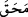

helâk etmek için.
“Mahvetmek” diye ifade ettiğimiz “  ” bir şeyi yavaş yavaş eksiltmek, demektir.
Âyetteki kâfirlerden murad, Uhud günü Peygamber Efendimiz (s.a.)’le savaşan ve
küfürlerinde ısrar edenlerdir. Ki Cenâb-ı Hak, bunların hepsini helâk etmiştir.
Kâşânî (k.s.) şöyle diyor: Mü’minlerin belâya dûçâr edilmesinin faydalarından biri
de sabır, şecâat, yakîn gücü, nefse aldırmama, kalbin nefse galebe etmesi, Allah
Teâlâ’nın emirlerine uymak vb. kemâlattan olan istîdâdlarının kuvveden fiile çıkmasını
sağlamasıdır.
Necmüddîn Kübrâ (k.s.) şöyle diyor:
“Ey seyr ilallah halindekiler! Allah’a doğru seyrederken “gevşeklik göstermeyiniz.”
Kaçırdığınız, dünyevî nîmetler ve uhrevî ikrâmlara “üzülmeyiniz.” Siz Rabbinizin
yanındaki makamınızla tüm dünya ve âhiret ehlinden “daha üstünsünüz.” Eğer bu
haberlere uymak maksadına yönelik bir niyetle tasdik ederek îman ediyorsanız,
gevşemeyiniz. Bu seyr esnâsında mücâhede ve envâ-i çeşit belâ ve imtihandan size bir
yara dokunursa, bunun benzeri yaralar belâlar o peygamber ve velîler kavmine de
dokunmuştu. Biz bu, mihnet, belâ ve imtihan günlerini seyr ilallah hâlindeki insanlar
arasında çevirip dururuz. Bir gün nîmet, bir gün belâ; bir gün bağış bir gün ezâ. “Ta ki
Allah, îman edenleri bilsin.” Allah, onları imtihan ederek şehâdet makamına istîdâdlı
hale getirsin ve siz ey seyr ilallah hâlinde çeşitli mihnet ve belâlarla imtihan edilenler,
aranızdan şahidler, şühûd ve müşâhede erbâbı kişiler edinsin diye... gâh sizi gâh
onları belâya dûçâr eder. Allah, istîdâdlarını Allah’dan başkasını elde etmeye, O’ndan
başkasına seyr etmeye yönelten zâlimleri sevmez.
“Ve Allah, inananları iyice arındırsın, kâfirleri de mahvetsin diye bu günleri
aranızda çevirip duruyor.” Yani, mü’minlere Allah uğrunda isâbet eden bütün musîbet,
gam ve kederler günahlarına keffâret olacak; kalplerini temizleyecek; ruhlarını
kurtaracak ve sırlarını arındıracaktır. Kâfirlere isâbet eden bütün nîmet, güç-kuvvet ve
sevinç ise, kâfirlerin nankörlük etmesine sebep olacak; azgınlıklarını artıracak;
kalplerini körleştirecek; nefislerini bu hallere alışkın hale getirecek; ruhlarını
mahvedecek ve sırlarını çürütecektir. Bu durumda muhabbet ve mârifet ehli de azlıkla,
hastalıkla ve zilletle imtihan edilmekten kurtulamayacaktır. Çünkü hikmet-i ilâhiyyesinin
muktezâsı, budur. Hz. Peygamber’in şu sözü gözler önündedir: “En şiddetli belâya
peygamberler, sonra velîler, sonra da daha alt derecedeki insanlar dûçâr
edilegelmiştir.”[123]
Anlatılır ki: Hz. Îsâ (a.s.); temizlenip susuzluğunu gidermesi için bir pınarı, güçlü
kuvvetli kalması için de hindibâ yetiştiren bir bahçesi olan âbid bir insanın yaşadığı
dağdan geçerken, bu âbide selam verdi. Âbid “ve aleyküm selam” deyince Hz. Îsâ:
– “Ne kadar zamandan beri burada Allah’a ibâdet ediyorsun?” diye sordu. Âbid:
– “Seksen seneden beri ibâdet ediyorum ve Allah’dan bir ihtiyacımı gidermesini